Background
Looking towards the future, I am going to need a car. I do not want my car to just be a way of getting myself from Point A to Point B, I want it to function as a tool. I want hauling capacity for projects and raw materials. I also want to learn from the build process, have air conditioning, decent fuel economy, and stay under 5,000 dollars if possible. After much thought and research, I came to the conclusion that the best way to meet all of those criteria would be to swap an old Ford F-100 truck body onto the drivetrain of a 2005 Ford Crown Victoria Police Interceptor (once belonging to the Portland Police Department), to achieve the performance of the police car with the aesthetic and hauling ability of a 1960's pick up truck. Believe it or not, it is actually a fairly common swap that people do, because the wheelbase of the truck is almost exactly the same as the wheelbase of the police interceptor. This project is still in progress as of October 2018.
Crown Victoria Preparation
The first step was stripping the Crown Victoria down to its bare shell, removing everything to make the body removal as easy as possible. Luckily for me, the front bumper was already missing, so I got to save some time.
 The car, missing its front bumper.
The car, missing its front bumper.
Side view of the relatively untouched car.
 Untouched interior.
Untouched interior.
I began by removing all of the seats, before moving on to the upholstery removal. Then I removed the front fenders and hood.
 Seats out.
Seats out.
 Removing upholstery.
Removing upholstery.
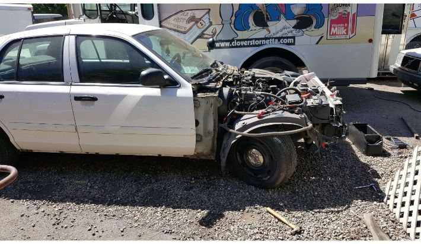 Hood and fenders gone.
It became apparent pretty immediately that the entire wiring harness would have to be removed and reinstalled later in order to permit the body to be lifted off, and all interior trim as well as the dashboard had to be removed to access the harness. I labelled all of the connections with blue tape.
 Dashboard on its way out, it was much heavier than I expected.
Dashboard on its way out, it was much heavier than I expected.
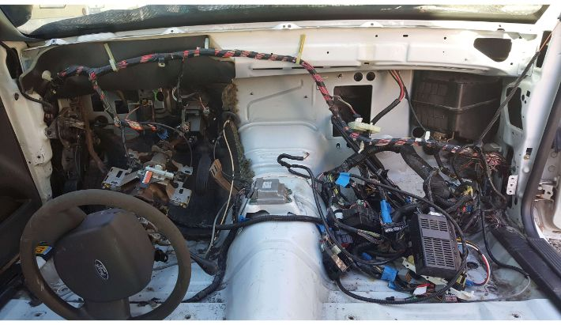 Dash gone, revealing a mess of wiring.
With all trim out, I could then unplug the harness from its seemingly endless number of connections, and separate it from the car.
 Harness revealed after removing trim.
Harness revealed after removing trim.
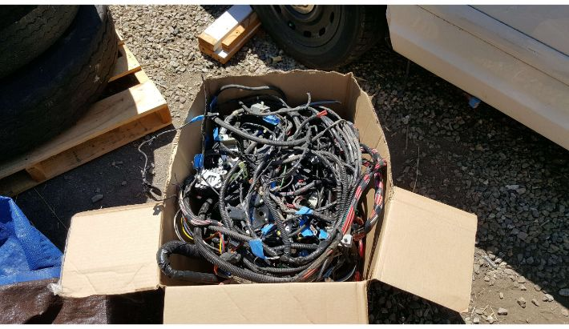 The entire harness, fit into a cardboard box for safe keeping. What a headache!
The harness was the last big thing obstructing the body from lifting off, so with it gone I could (finally) undo the ten or so bolts holding the body to the chassis as well as the gas filler neck cap and doors. I also removed the steering wheel, power brake booster, gas pedal, and heater/AC assembly from the firewall. From there, it just took a forklift a little coaxing to reveal... that the gas tank was still attached to the body! I had to dash in and undo the straps and drill out the pop rivets holding the assembly in place, at which point the body finally separated from the chassis.
 The car, completely stripped down.
The car, completely stripped down.
 The body is off!
The body is off!
 At last, the part of the car that I actually need for this build: the powertrain and chassis.
At last, the part of the car that I actually need for this build: the powertrain and chassis.
Body Swap
With the teardown of the Crown Victoria complete, the next thing to do was to find a suitable truck body to put on top. After sifting through Craigslist listings for several months, I finally found what I was looking for in a 1965 Ford F-100 stepside. It was a non-op with minimal rust, intact glass, and some minor dents. The only issue was that it sat in the back of a fire station over 65 miles from where I live, and I have no trailer. I heard rumors that triple-A insurance members could get their projects towed for free under their membership plans, so I set out with my dad and his insurance card to the site of the truck. We called up triple-A once we arrived, and they sent a flatbed truck over. I made sure to slip the driver a twenty before showing him the vehicle, and sure enough it was loaded up, tied down, and brought to the auto shop for free.
Loading the donor truck onto the triple-A flatbed.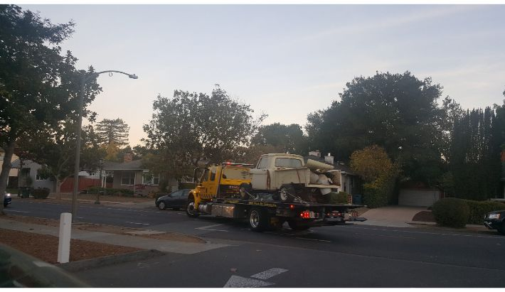 Truck en-route to auto shop!.
The first order of business for this thing was to reattach all of the front body panels and bed.
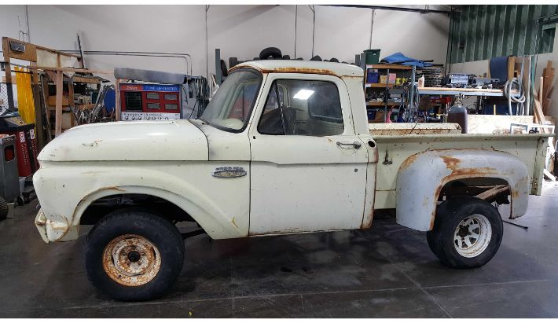 All body panels attached.
To make the swap as easy as possible, I decided to weld the bed and cab together while they were still attached to the original truck chassis to ensure that the spacing between them didn’t change and to preserve their alignment relative to each other. I did this by cutting pieces of mild steel square tubing to fit the gap between the bed and cab, then welding them in place.
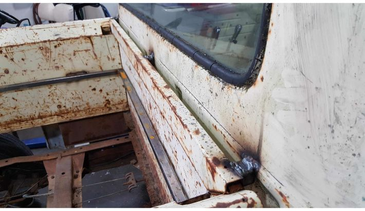 Steel spacers welded in to set the gap and align the bed to the cab.More spacers for bed stability.
Lifting the body of the truck off its chassis in one piece forced several potential risks into existence that had to be taken care of. The first risk was that the bed, with nothing holding the sides apart width-wise in the middle, would lose its rectangularity. To prevent this, I welded in a skeleton frame of steel square tubing for extra rigidity.
Steel bed skeleton frame welded in.
Another risk was that the bed would be cantilevered either into or away from the cab (assuming a pivot axis at the bottom edge of the bed where the bed meets the cab) depending on where I set the lift arms. To avoid this, I welded pieces of rebar and conduit between the outer corners of the bed and the top of the cab. In addition, I welded in square tubing lift points between cab and bed to eliminate the pivot axis.
Anti-cantilever supports welded in.Lift points welded in.
With all body lift risks avoided, I then got to work undoing the bolts that held the body to the chassis before liberating the body.
Body lifted off!The now useless chassis.
Next came the tedious task of setting the body on top of the Crown Victoria chassis. This required slightly modifying the body; I had to cut chunks out of the support rails to fit around the. Crown Victoria chassis rails, and cutting out parts of the bed inside the fenders to accommodate the rear suspension assembly. After that, I spent a couple of hours fiddling with the position of the chassis underneath the body to set the stance, ride height, and alignment (tip: this is much easier to do if your shop floor is level). To set everything in place, I just welded the cab straight to the chassis- I would fabricate legit bodymounts later in the process.
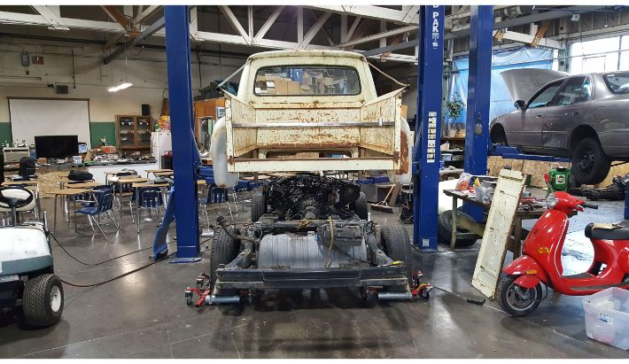 Lining the Crown Victoria underneath the truck body.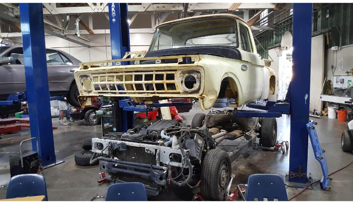 View from the front.
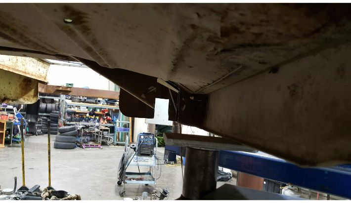 Cut chunks of cab support rail for chassis.
Another view of the chunk-less cab.
Pieces cut out of bed to fit around rear suspension.
Final stance set, ready for welding.
Body welded (temporarily) to chassis!.
Front End
With the body position set, I could then start fitting the components from the Crown Victoria to the truck body. The Crown Victoria is a little longer than the truck, so the first thing I did was chop off the front bumper assembly with an oxyacetylene torch to ensure that the front grille of the truck would be able to fit.
Making the cuts.Front bumper stuff off.
Next, I had fit the header cowl from the truck. To do this, I had to fabricate new mounts for it, which I did by welding some steel square tubing into a rectangle, that I then welded to the header cowl. I then made some bracket plates out of some steel plate with holes for mounting hardware, and drilled corresponding holes in the chassis. Finally, I welded those plates to the steel tubing on the header cowl. Before doing this, I had to cut a way massive amounts of material from the cowl itself to accommodate the larger radiator of the Crown Victoria, as well as the different height of the chassis rails.
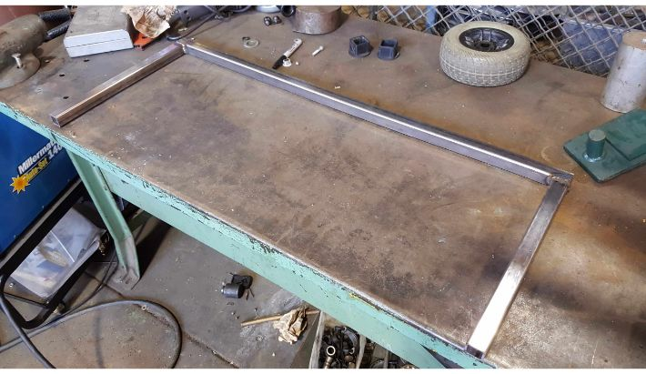 Welding the header cowl support tubing.Header cowl support welded on, mocking up the position.
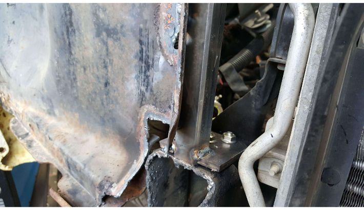 Mounting plates welded on.
Finished header cowl.
As you can see in the image above, The radiator sits quite low compared to the body, and there is about five inches of clearance between it and the inside of threader cowl support beam. So I decided to move the radiator up and closer to the engine to fit better. It needed to be closer to the engine because it was fouling the grille. I moved it back by drilling and tapping a new set of radiator bracket mounting holes in the chassis. To raise it, I fabricated a set of extension plates, then cut the top of the radiator brackets, and welded the place in the two pieces.
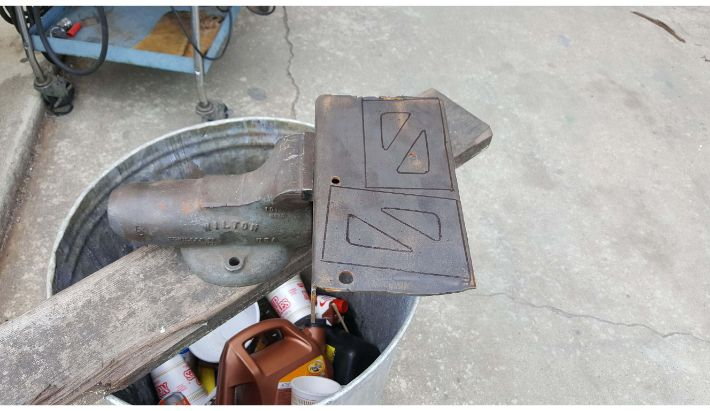 Extension plates marked out.Extension plates cut and ground to size.
Extension plate welded into radiator mount bracket.
Build in progress... Check back every once in a while for updates on this project!